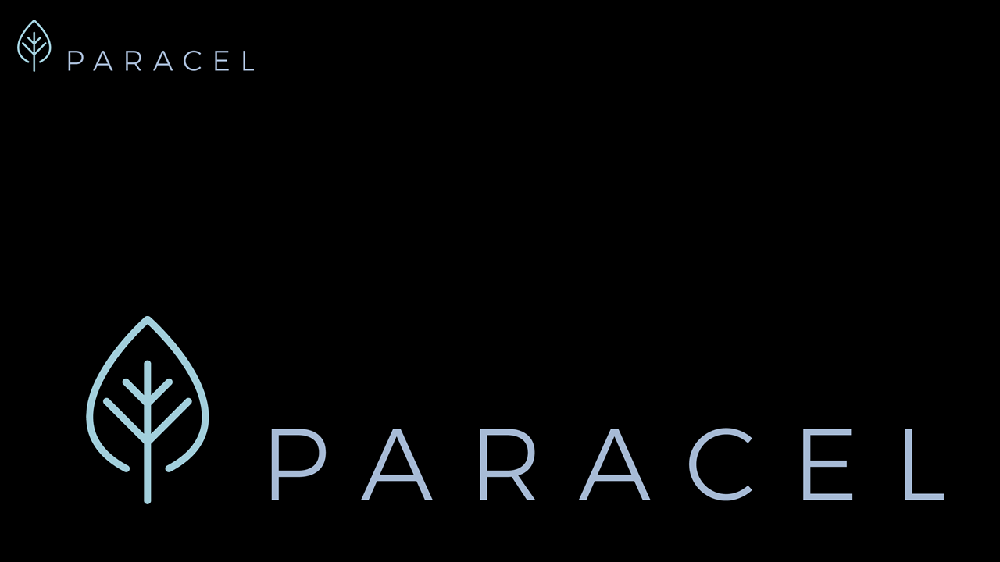

Acceso al Dashboard
Monitoreo de Impacto Social · Paracel

Monitoreo de Impacto Social · Paracel
P2: Mapeo de comunidades de residencia de los encuestados.
P15: ¿Cuáles son los principales aspectos positivos de vivir en tu ciudad/comunidad?
P16: ¿Cuáles son los principales problemas identificados en tu ciudad/comunidad?
P23: ¿Qué aspectos positivos ya viste en tu ciudad/comunidad desde que empezó la construcción de Paracel?
P25: ¿Crees que hay algún aspecto negativo en el proyecto de Paracel? ¿Cuáles?
P20: ¿A través de qué medio/s te enteraste sobre la empresa de producción de celulosa Paracel?
P7: ¿Cuál es tu nivel de estudios?
P10: ¿Cuál es tu ocupación actual?
P8: ¿Cuál es el ingreso mensual familiar en tu hogar?
Cambios más significativos en la percepción comunitaria a lo largo del tiempo. Se recomienda visualizar con todos los años seleccionados (CTRL + clic).
Curva histórica que visualiza el pico de aceptación y desgaste de expectativas.
Preocupación comunitaria constante por el empleo local vs avances del proyecto.
Desplazamiento de "La tranquilidad" por "La gente" como aspecto más valorado.
Reducción del "NS/NR" sobre la producción a favor del "Eucalipto/Celulosa".
Caída en percepción de nuevos empleos contra aumento en valoración infraestructural.
Crecimiento de canales directos y digitales frente a rumores.
Este Dashboard consolida de forma exhaustiva los resultados cuantitativos y cualitativos del Programa de Monitoreo de Percepción Social de Paracel, abarcando las líneas de base y actualizaciones anuales 2022–2025. Su propósito es dotar a los equipos de gestión de una herramienta de inteligencia de datos (Business Intelligence) capaz de cruzar variables sociodemográficas con atributos de favorabilidad, expectativas y temores comunitarios en tiempo real.
Los datos primarios son recopilados mediante encuestas estructuradas ejecutadas directamente en terreno (cara a cara) dentro del Área de Influencia Directa (AID) e Indirecta (AII) del proyecto Paracel, en la región de Concepción y áreas aledañas. Los cuestionarios transversales incluyen interrogantes cerradas (selección múltiple) y abiertas (respuestas espontáneas), lo que requiere de un agresivo proceso de post-codificación.
Para garantizar la interoperabilidad de bases de datos provenientes de distintos años y encuestadores, se aplicaron técnicas avanzadas de Extract, Transform, Load (ETL) a través de algoritmos desarrollados en Python: